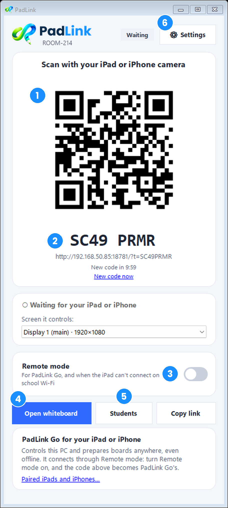
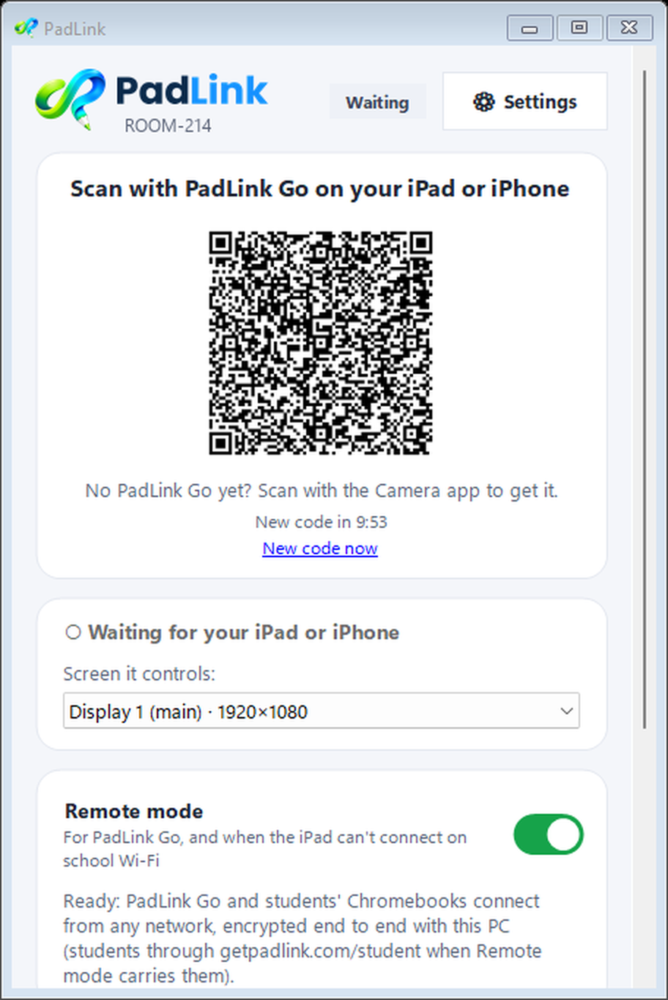
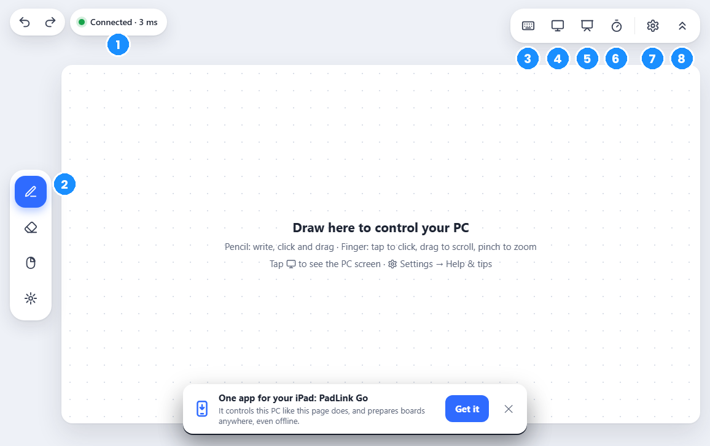

Guide › Getting started
Getting started
From download to your first lesson in about 10 minutes.
1. What you need
- A Windows 10 or 11 PC, usually the one connected to your projector or board.
- An iPad or iPhone. An Apple Pencil is great but optional.
- For Student Mode: a Chromebook, laptop or tablet for each student, with a web browser. Students don't install anything or make accounts.
2. Download and open PadLink
- On your PC, go to getpadlink.com and click Download for Windows.
- Open your Downloads folder, right-click PadLink.zip and choose Extract All.
- Open the new PadLink folder and double-click PadLink (PadLink.exe). There's nothing to install and no admin password needed.

- QR code: scan it with your iPad or iPhone to connect.
- Pairing code: if the camera can't scan, type the address under the QR code into Safari, and enter this code when it asks. It changes every 10 minutes.
- Remote mode: for school Wi-Fi (see step 4).
- Open whiteboard: opens the whiteboard on the PC.
- Students: starts Student Mode (see step 7).
- Settings: your version, updates, the iPad and Pencil, connecting.
3. Connect your iPad or iPhone
- Open the Camera app on your iPad or iPhone and point it at the QR code on the PC.
- Tap the link that appears. PadLink opens in Safari.
- The iPad shows a 4-digit number, and the PC shows the same number. Click Allow on the PC.

That's it. Your iPad is remembered for 30 days, so next time it reconnects by itself, no scanning needed.
4. On school Wi-Fi: Remote mode
Many school networks don't let an iPad talk to a PC directly. Remote mode connects them anyway, encrypted from end to end.
- In the PadLink window, turn on Remote mode.
- A new QR code appears. Scan it with your iPad as in step 3. That's it: no account, no sign-in, no data limit.
Remote mode connects your iPad (and, if you like, students' Chromebooks) straight to your PC, encrypted, finding its way through most school networks. If a network blocks that, it goes through an encrypted relay instead, still unreadable to anyone in between.
With Dev Tunnels (older setups, or chosen in Settings), the first time you sign in with a GitHub or Microsoft account. The sign-in page opens in your PC's browser.

5. A quick tour of the iPad

- Connection: green means connected. Tap it for details.
- Pencil tools: Pen, Eraser, Right-click and Laser pointer. Undo and Redo sit at the top left, as on the PC.
- Keys: type on the PC with the iPad's keyboard.
- PC screen: see your PC's screen on the iPad.
- Whiteboard: open or close the whiteboard.
- Class tools: timer, name picker, polls and Student Mode.
- Settings, including Help & tips.
- Hide the toolbars for more room. Tap the tab at the top to bring them back.
Drawing and clicking: each spot on the iPad is the same spot on your PC screen, like a drawing tablet. With the Pencil, a light touch moves the pointer and a firmer press clicks or drags. With a finger, tap to click, drag to scroll and pinch to zoom.
6. Open the whiteboard
Tap the Whiteboard button on the iPad (5 in the picture above), or click Open whiteboard in the PadLink window. The iPad's toolbar switches to the whiteboard's own tools: pens, highlighter, shapes, text, math, sticky notes and pages.

7. Let your students join
Students work on their own whiteboards from their Chromebooks (or any device with a web browser), and you see everyone's work live.
- Make a class list first: Class tools → Names, then add your students' names.
- Open Class tools → Students (or click Students in the PadLink window), pick your class and click Open the class.
- A join code fills the board. Students scan it, or go to the address and type the code, then tap their name.
- Click Let in for each student, or Let everyone in.


When the lesson ends, click Close the class. Everyone is disconnected and their boards are deleted.